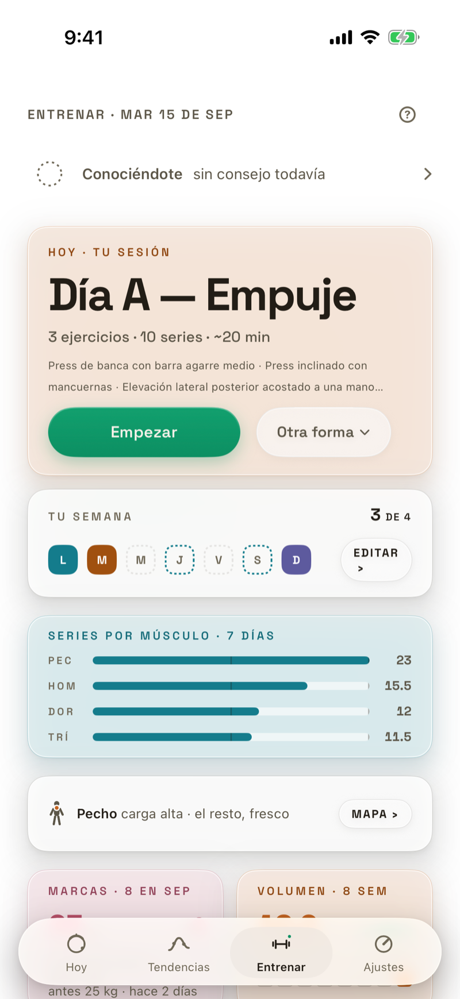
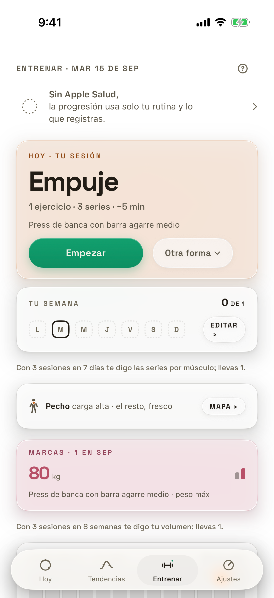
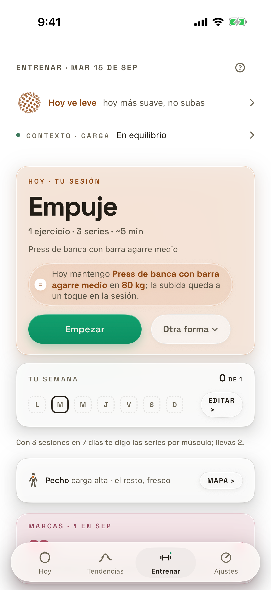
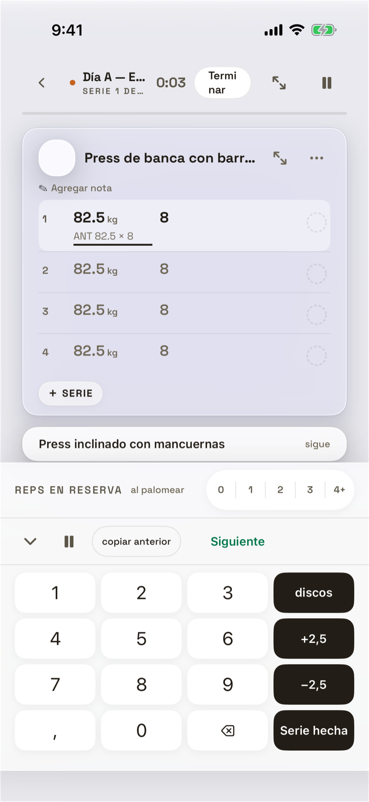
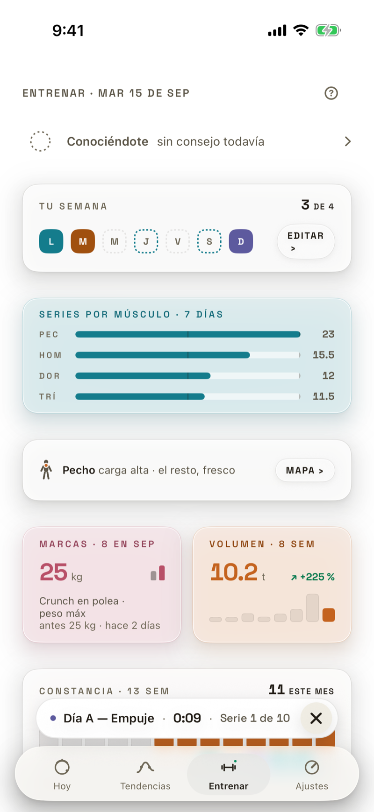
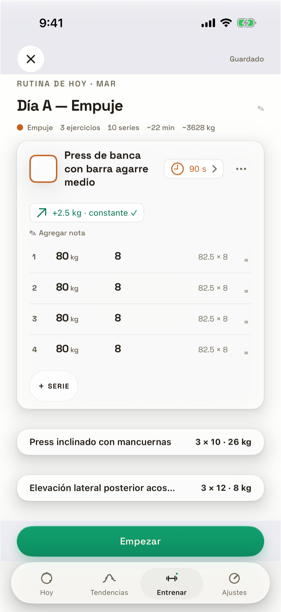
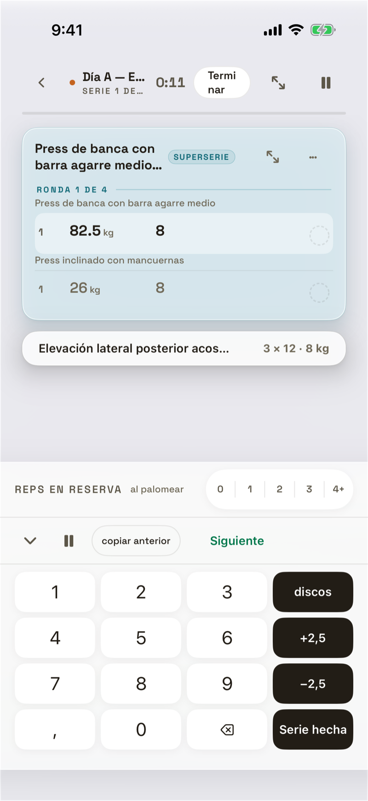

Hoy · TodayView
El hub principal. El héroe nunca miente: numeral a color con veredicto, «··» calibrando, barra gris sin lectura, tinta cuando hay número sin contexto.
36 estados


Entrenar · flujo de fuerza
El hub del tracker (plan sembrado: split Empuje/Jalón/Pierna, Empuje = hoy) → la sesión guiada serie por serie. Ola 2 (FER-386/388): hub completo (5 estados), Tu Plan + editor, historial (5 estados × filtro), biblioteca + detalle de ejercicio, marcas/volumen/tickets, 6 de los 8 estados de sesión viva, y 8 herramientas alcanzables por taps deterministas.
55 estados











Ajustes · AjustesView
La raíz de Ajustes (perfil inline + secciones por hoja) y sus hijas: unidades, FC máx, ciclo, las 3 ruedas de perfil, aviso matutino, recordatorio de entreno, la puerta de Historial de FA, Fuentes de datos, Apple Salud y Soporte.
26 estados


Fuera del iPhone · widgets, Live Activity, Watch
Superficies que test_mapa no alcanza porque no son una pantalla del iPhone navegable con -cenit.nav: los widgets de HomeScreen (TrainTodayWidget/WeekWidget), la Live Activity de la sesión de fuerza (RestLiveActivity) y las pantallas del Apple Watch. Mapa 100 % Ola 4 (FER-394) investigó renderizarlas aparte con ImageRenderer (SwiftUI → PNG, «render, no captura del simulador») en vez de capturarlas. Los tres quedaron NO VIABLES dentro del alcance «toca solo estos archivos» de la ola — cada nodo documenta el estado que se hubiera renderizado y por qué no se pudo, como backlog explícito (ver docs/appmap/mapa/README.md § omitido).
29 estados


Onboarding · los siete actos + gates de arranque
El wizard de bienvenida (FER-109/FER-113): siete actos sobre un mismo lienzo de partículas que se transforma, sus siete aterrizajes según lo que Apple Salud entregó (OnboardingLanding), y las pantallas bloqueantes que pueden aparecer antes de llegar a la app — términos, store roto, restaurar un respaldo, la coreografía de entrada.
19 estados


Tendencias · Cuerpo
Landing de Cuerpo + detalle de cada una de las 36 métricas de MetricCatalog en su rango por defecto (M) × 1 estados (con datos / sin lecturas / calibrando). Versión ligera: sin repetir por rango (regenerar con --full para los 6 rangos). Más Explorar. Ciclo omitido (vive en la familia Ajustes).
40 estados


Componentes · CenitDesign
Piezas del sistema Liquid Glass · El Eje, renderizadas reales sobre el lienzo. Busca por nombre.
26 componentes